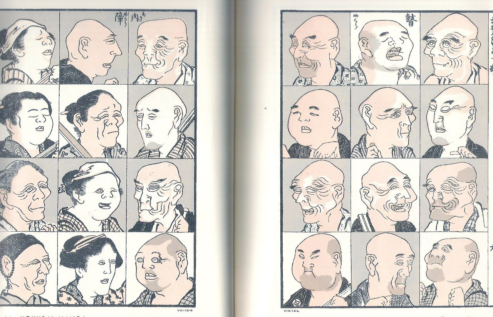

Raíces · 浮世絵
Antes del manga,
la estampa.
El manga no nace de la nada: hereda mil años de imagen japonesa. Tres estampas de dominio público para empezar la conversación en clase.

Dominio público
La imagen japonesa más reproducida del mundo.
La ola de Hokusai llegó a Europa como papel de embalaje y cambió la pintura occidental. En el aula abre la pregunta clave: ¿cómo viaja una imagen? La respuesta lleva directa al manga.

Dominio público · Colección del Aula de Cómic
El hombre que puso nombre al medio.
Hokusai publicó en 1814 sus cuadernos de bocetos: los Hokusai manga. Dos siglos después, la palabra sigue nombrando el cómic japonés — y el fondo del Aula de Cómic guarda su facsímil.

Dominio público
La lluvia dibujada a líneas.
Las líneas de lluvia de Hiroshige son las abuelas de las líneas cinéticas del manga: el mismo gesto para dibujar lo invisible. Comparar ambas páginas es una actividad de anatomía visual inmediata.
→ Probarlo en clase: generador de viñetas con líneas cinéticas